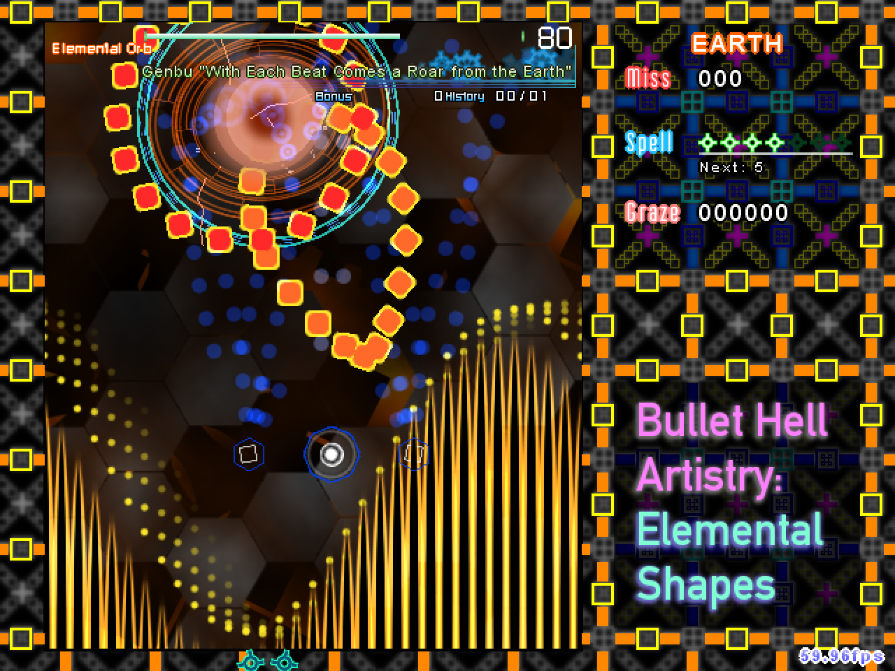

Bullet Hell Artistry 01
ELEMENTAL SHAPES
RELEASE INFORMATION
Release Date: August 26, 2019
Download: Download RC-1 (August 26, 2019) [+archive_img]
Install: Place the unarchived directory within the 'script' directory of your copy of Touhou Danmakufu ph3 [.1]
GAMEPLAY AND SYNOPSIS
My Bullet Hell Artistry 1 Contest Entry is a Touhou-esque vertical scrolling shooter, though it has significant differences when compared to other scripts I have made recently. Notable differences include dropping scoring, lives, items, and the package entirely. The player rotates between four shottypes representing the four classical elements - a forward focus fire shot, a spread water shot, a spread-homing wind/air shot, and a forward burst earth shot. The player's bomb does no damage but clears bullets in a decently sized radius.
There are twenty attacks in the game representing a number of different elements, starting with the four classical elements. During the first part of the script, everything is heavily structured, with a very specific selection of flat colored bullet graphics coupled with a very free danmaku style completely detached from any theme other than that of the elements themselves. In the second part of the script, the restrictions on bullet types loosen but in exchange the character's fighting style shines through.
Overall, this script is fairly difficult and incorporates a number of CPU-intense features such as heavy mathematics, curvy lasers, render targets, and copious usage of line primitives. Please be advised before playing.
POSTMORTEM
LEGAL AND CREDITS
Wait, what?! The only things from Touhou in this script are sound effects?! Whoa! But then again, when half the graphics in the script are geometric shapes, there's not much that can be taken from Touhou, huh...
I do not and will not allow unauthorized redistribution of this game and/or use of original code/assets without express permission.